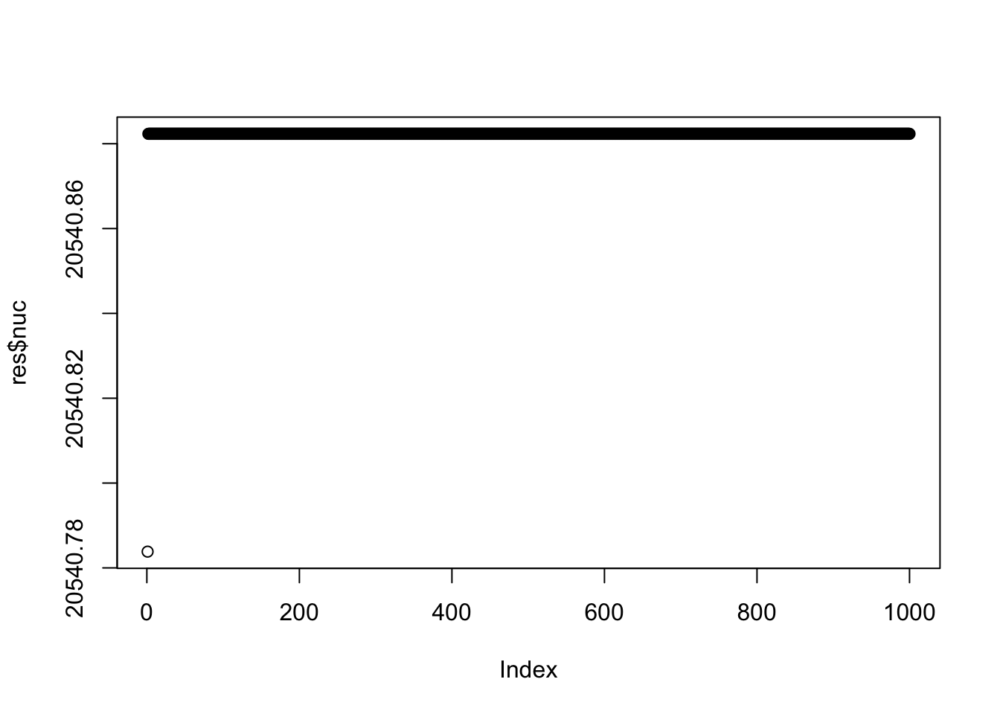
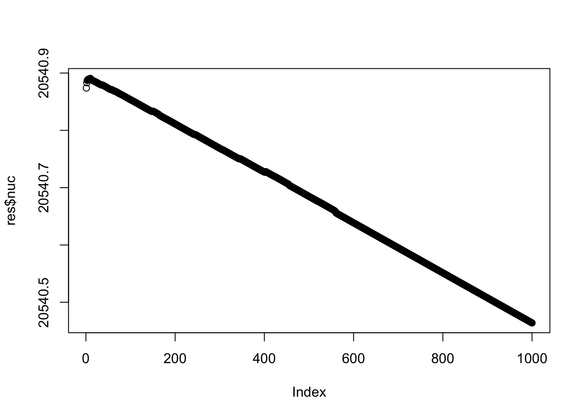
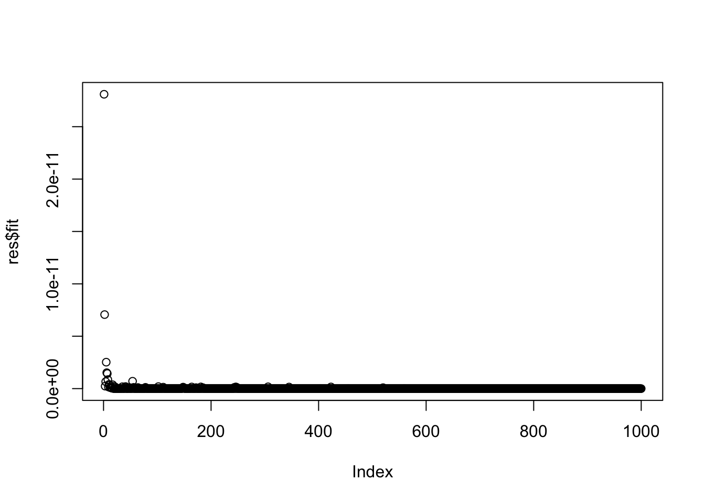
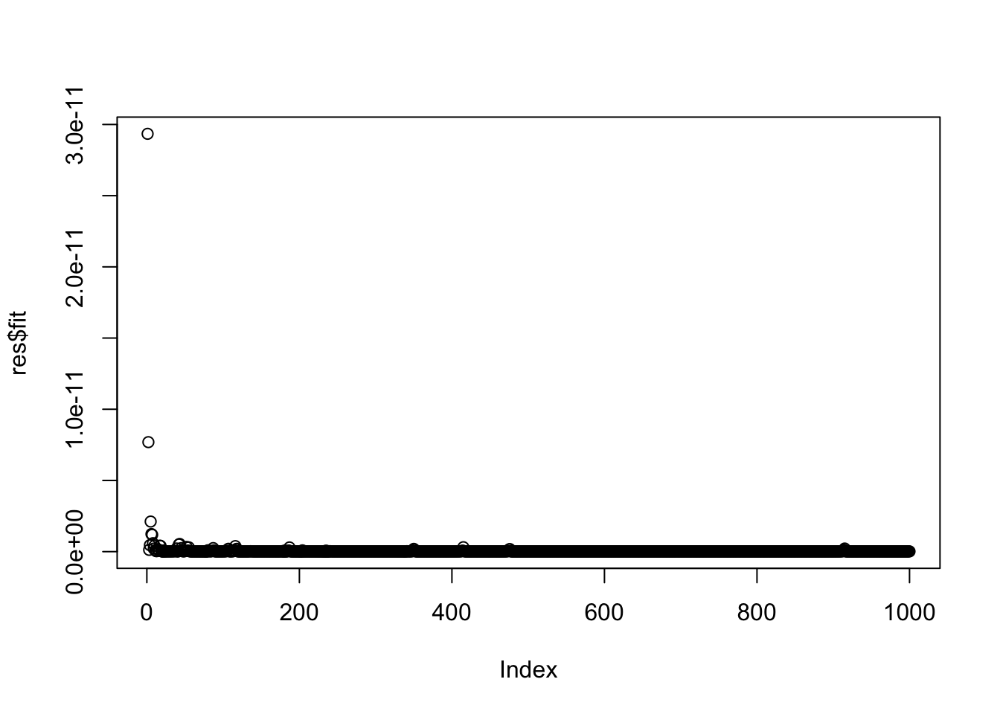
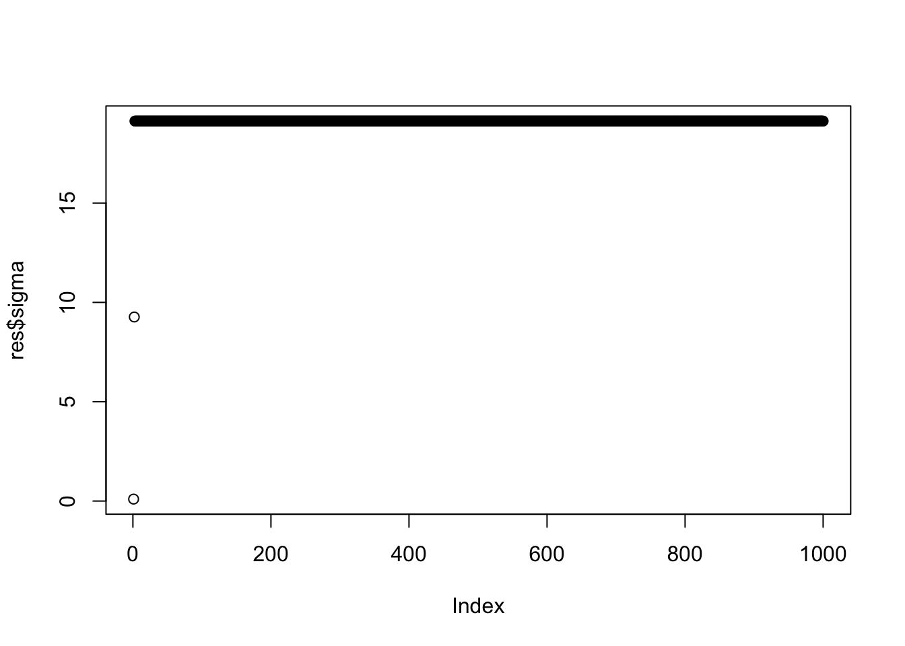
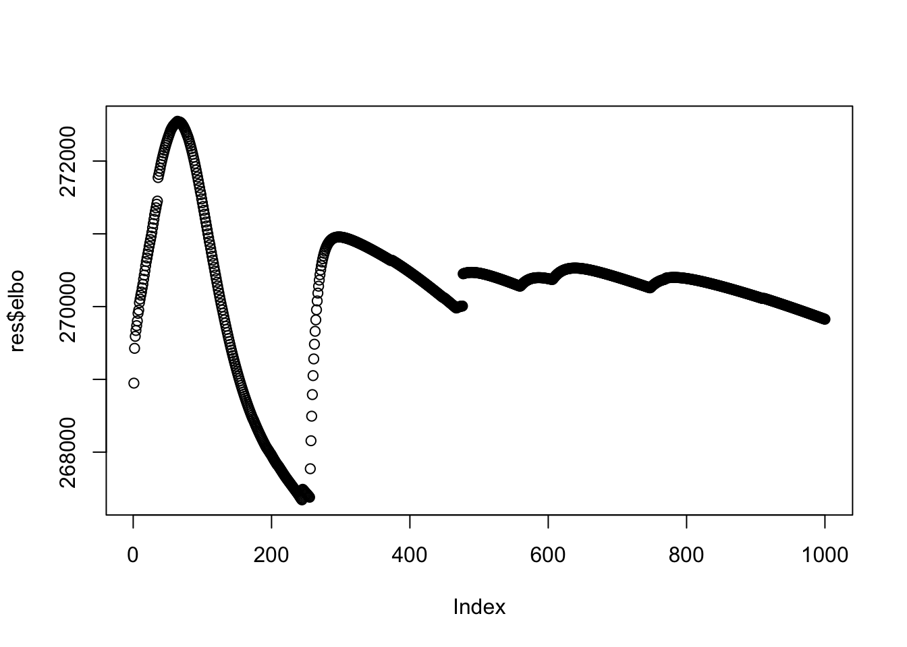
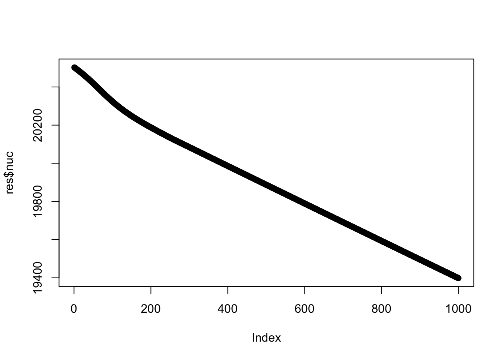
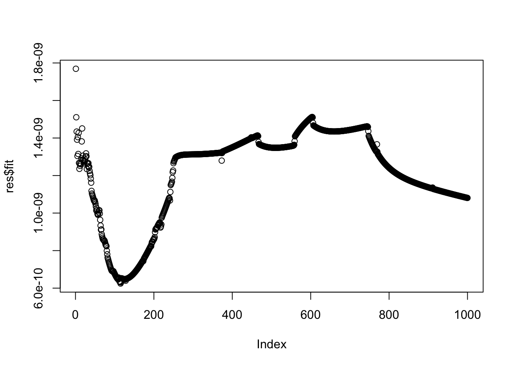

ICA vs flash rank-1 update (1)
Junming Guan
2025-11-08
Last updated: 2025-11-13
Checks: 7 0
Knit directory: misc/
This reproducible R Markdown analysis was created with workflowr (version 1.7.1). The Checks tab describes the reproducibility checks that were applied when the results were created. The Past versions tab lists the development history.
Great! Since the R Markdown file has been committed to the Git repository, you know the exact version of the code that produced these results.
Great job! The global environment was empty. Objects defined in the global environment can affect the analysis in your R Markdown file in unknown ways. For reproduciblity it’s best to always run the code in an empty environment.
The command set.seed(20251108) was run prior to running
the code in the R Markdown file. Setting a seed ensures that any results
that rely on randomness, e.g. subsampling or permutations, are
reproducible.
Great job! Recording the operating system, R version, and package versions is critical for reproducibility.
Nice! There were no cached chunks for this analysis, so you can be confident that you successfully produced the results during this run.
Great job! Using relative paths to the files within your workflowr project makes it easier to run your code on other machines.
Great! You are using Git for version control. Tracking code development and connecting the code version to the results is critical for reproducibility.
The results in this page were generated with repository version 9b210d1. See the Past versions tab to see a history of the changes made to the R Markdown and HTML files.
Note that you need to be careful to ensure that all relevant files for
the analysis have been committed to Git prior to generating the results
(you can use wflow_publish or
wflow_git_commit). workflowr only checks the R Markdown
file, but you know if there are other scripts or data files that it
depends on. Below is the status of the Git repository when the results
were generated:
Ignored files:
Ignored: .Rhistory
Ignored: .Rproj.user/
Untracked files:
Untracked: analysis/ica_vs_flash_r1_update_2.Rmd
Untracked: analysis/preemble.tex
Note that any generated files, e.g. HTML, png, CSS, etc., are not included in this status report because it is ok for generated content to have uncommitted changes.
These are the previous versions of the repository in which changes were
made to the R Markdown
(analysis/ica_vs_flash_r1_update_1.Rmd) and HTML
(docs/ica_vs_flash_r1_update_1.html) files. If you’ve
configured a remote Git repository (see ?wflow_git_remote),
click on the hyperlinks in the table below to view the files as they
were in that past version.
| File | Version | Author | Date | Message |
|---|---|---|---|---|
| Rmd | 9b210d1 | junmingguan | 2025-11-13 | wflow_publish(c("analysis/ica_vs_flash_r1_update_1.Rmd")) |
| html | 25a3e40 | junmingguan | 2025-11-13 | Build site. |
| Rmd | a060fec | junmingguan | 2025-11-13 | wflow_publish(c("analysis/ica_vs_flash_r1_update_1.Rmd")) |
| html | cd608b6 | junmingguan | 2025-11-13 | Build site. |
| Rmd | 12e9d2e | junmingguan | 2025-11-13 | wflow_publish(c("analysis/ica_vs_flash_r1_update_1.Rmd")) |
| html | 71e288e | junmingguan | 2025-11-13 | Build site. |
| html | 65a5c9c | junmingguan | 2025-11-13 | Build site. |
| Rmd | d08229b | junmingguan | 2025-11-13 | wflow_publish(c("analysis/ica_vs_flash_r1_update_1.Rmd", "analysis/index.Rmd")) |
| html | f6acacf | junmingguan | 2025-11-13 | Build site. |
| Rmd | 9109018 | junmingguan | 2025-11-13 | wflow_publish(c("analysis/ica_vs_flash_r1_update_1.Rmd", "analysis/index.Rmd")) |
library(flashier)
library(Matrix)
library(fastICA)
library(fastTopics)
library(ebnm)rank-1 update with rank constraint on the residual matrix: algorithm
\[ \min_{\boldsymbol{M}, \boldsymbol{\ell}, \boldsymbol{f} ,\sigma^2} \frac{1}{2\sigma^2}\|\boldsymbol{Y}-\boldsymbol{\ell}\boldsymbol{f}^\top -\boldsymbol{M}\|^2_F + \text{pen}(\boldsymbol{\ell}) + \text{pen}(\boldsymbol{f}) + \lambda \|\boldsymbol{M} \|_* \]
For each iteration \(t\):
Update \(\boldsymbol{M}\) by solving
\[ \min_{\boldsymbol{M}} \frac{1}{2\sigma_{t-1}^2}\|\boldsymbol{A} -\boldsymbol{M}\|^2_F + \lambda \|\boldsymbol{M} \|_*, \]
where \(\boldsymbol{A}=\boldsymbol{Y} - \mathbb{E}_{q_{t-1}}[\boldsymbol{\ell f}^\top]\), via truncated SVD: \({\boldsymbol{M}}_{t}=\boldsymbol{U}_A \text{diag}\{(s_i-\lambda \sigma_{t-1}^2)_+\}\boldsymbol{V}_A^\top\).
Flashier backfit to update \(\boldsymbol{\ell}\), \(\boldsymbol{f}\) and \(\sigma^2\):
\[ \min_{\boldsymbol{\ell}, \boldsymbol{f} ,\sigma^2} \frac{1}{2\sigma^2}\|\boldsymbol{Y}-\boldsymbol{\ell}\boldsymbol{f}^\top -\boldsymbol{M}_t\|^2_F + \text{pen}(\boldsymbol{\ell}) + \text{pen}(\boldsymbol{f}). \]
Code
rank-1 update with rank constraint on the residual matrix
svt <- function(Z, tau) {
svdZ <- svd(Z)
d <- pmax(svdZ$d - tau, 0)
return(svdZ$u %*% (d * t(svdZ$v)))
}
r1_update <- function(Y, lambda, sigma_init, g_init, fix_param = FALSE, max_iter = 100) {
svd_result <- svd(Y)
# Access the components
l <- svd_result$d^0.5 * svd_result$u[,1]
f <- svd_result$d^0.5 * svd_result$v[,1]
M <- Y - outer(l, f)
l <- matrix(l, ncol = 1)
f <- matrix(f, ncol = 1)
elbo <- c()
sigma <- c()
sigma_prev <- sigma_init
fit <- c()
nuc <- c()
for (i in 1:max_iter) {
if (fix_param) {
M <- svt(Y - l %*% t(f), lambda * sigma_init^2)
flash_res <- flash_init(Y - M, S = sigma_init, var_type = NULL) |>
flash_factors_init(init = list(l, f),
ebnm_fn = c(
flash_ebnm(prior_family = 'normal_scale_mixture', g_init = g_init[[1]], fix_g = TRUE),
flash_ebnm(prior_family = 'normal_scale_mixture', g_init = g_init[[2]], fix_g = TRUE))
) |> flash_backfit(verbose = 0)
} else {
M <- svt(Y - l %*% t(f), lambda * sigma_prev^2)
flash_res <- flash_init(Y - M) |>
flash_factors_init(init = list(l, f),
ebnm_fn = ebnm_point_normal) |> flash_backfit(verbose = 0)
}
l <- flash_res$L_pm
f <- flash_res$F_pm
elbo <- c(elbo, flash_res$elbo)
sigma <- c(sigma, flash_res$residuals_sd)
sigma_prev <- flash_res$residuals_sd
fit <- c(fit, mean((Y-M-l%*%t(f)))^2)
nuc <- c(nuc, sum(abs(svd(M)$d)))
rank <- c(rank, sum(abs(svd(M)$d) > 1e-5))
}
return(list(l=l, f=f, M=M, elbo=elbo, sigma=sigma, fit=fit, nuc=nuc, rank = rank))
}fastICA rank-1 update
fastica_r1update = function(X,w){
w= w/sqrt(sum(w^2))
P = t(X) %*% w
G = tanh(P)
G2 = 1-tanh(P)^2
w = X %*% G - sum(G2) * w
return(w)
}
preprocess = function(X, n.comp=10){
n <- nrow(X)
p <- ncol(X)
X <- scale(X, scale = FALSE)
X <- t(X)
## This appears to be equivalant to X1 = t(svd(X)$v[,1:n.comp])
V <- X %*% t(X)/n
s <- La.svd(V)
D <- diag(c(1/sqrt(s$d)))
K <- D %*% t(s$u)
K <- matrix(K[1:n.comp, ], n.comp, p)
X1 <- K %*% X
return(X1)
}Simulation results
We simulated \(\boldsymbol{G}=\boldsymbol{X}\boldsymbol{Y}+\boldsymbol{E}\), where entries in \(\boldsymbol{X}\) are generated from \(\pi_x \delta_0+(1-\pi_x)\mathcal{N}(0, 5^2)\) with \(\pi_x=0.7\), and entries in \(\boldsymbol{Y}\) are generated from \(\pi_y \delta_0+(1-\pi_y)\mathcal{N}(0, 5^2)\) with \(\pi_y=0.8\).
M <- 1000 # Number of variants/samples (rows)
L <- 10 # True number of latent factors
T <- 100 # Number of traits/phenotypes (columns)
s_1 <- 0 # Standard Deviation 1 (Spike component)
s_2 <- 5 # Standard Deviation 2 (Slab component)
eps <- 1e-2 # Standard Deviation for observation noise
# Set seed for reproducibility
set.seed(42)
# Data Simulation (G = X %*% Y + noise)
# 3.1. Generating Standard Deviation Matrices (a and b)
# Elements are sampled from {s_1, s_2} [1, 2].
sd_choices <- c(s_1, s_2)
# Matrix 'a' (M x L): Standard deviations for X (Probabilities p=[0.7, 0.3]) [4]
p_a <- c(0.7, 0.3)
a_vector <- sample(sd_choices, size = M * L, replace = TRUE, prob = p_a)
a <- matrix(a_vector, nrow = M, ncol = L)
# Matrix 'b' (L x T): Standard deviations for Y (Probabilities p=[0.8, 0.2]) [4]
p_b <- c(0.8, 0.2)
b_vector <- sample(sd_choices, size = L * T, replace = TRUE, prob = p_b)
b <- matrix(b_vector, nrow = L, ncol = T)
# Generating Latent Factors (X and Y)
# X is drawn from Normal(0, a)
X <- matrix(rnorm(M * L, mean = 0, sd = a), nrow = M, ncol = L)
# Y is drawn from Normal(0, b)
Y <- matrix(rnorm(L * T, mean = 0, sd = b), nrow = L, ncol = T)
# Generating Noise and Final Data Matrix G
# Noise is generated from Normal(0, eps)
noise <- matrix(rnorm(M * T, mean = 0, sd = eps), nrow = M, ncol = T)
# Calculate the final data matrix G = X @ Y + noise
G <- X %*% Y + noisel_prior <- list(
pi = p_a,
mean = c(0, 0),
sd = c(0, 5)
)
class(l_prior) <- "normalmix"
f_prior <- list(
pi = p_b,
mean = c(0, 0),
sd = c(0, 5)
)
class(f_prior) <- "normalmix"
g_init <- list(l_prior, f_prior)fastICA
X1 = preprocess(G)
w = rnorm(nrow(X1))
for(i in 1:100)
w = fastica_r1update(X1,w)
cor(X,t(X1) %*% w) [,1]
[1,] 0.03653517
[2,] 0.01275894
[3,] -0.03598254
[4,] -0.04176304
[5,] -0.00758211
[6,] -0.99866349
[7,] 0.04493473
[8,] -0.04582735
[9,] -0.01369435
[10,] -0.05390798w = w/sqrt(sum(w^2))
s = t(X1) %*% w
a = t(G) %*% s/sum(s^2)PCA
cor(X, svd(G)$u[,1]) [,1]
[1,] 0.05072517
[2,] -0.39582047
[3,] -0.64926229
[4,] -0.04373273
[5,] 0.15814225
[6,] -0.29718621
[7,] 0.02612379
[8,] 0.57683257
[9,] 0.01310495
[10,] -0.23330206rank-1 update with rank constraint on the residual matrix
\(\lambda=10\)
res <- r1_update(G, 10, sigma_init=eps, g_init = g_init, fix_param = FALSE, max_iter = 1000) --Estimate of factor 1 is numerically zero!
--Estimate of factor 1 is numerically zero!
--Estimate of factor 1 is numerically zero!
--Estimate of factor 1 is numerically zero!
--Estimate of factor 1 is numerically zero!
--Estimate of factor 1 is numerically zero!
--Estimate of factor 1 is numerically zero!
--Estimate of factor 1 is numerically zero!
--Estimate of factor 1 is numerically zero!
--Estimate of factor 1 is numerically zero!
--Estimate of factor 1 is numerically zero!
--Estimate of factor 1 is numerically zero!
--Estimate of factor 1 is numerically zero!
--Estimate of factor 1 is numerically zero!
--Estimate of factor 1 is numerically zero!
--Estimate of factor 1 is numerically zero!
--Estimate of factor 1 is numerically zero!
--Estimate of factor 1 is numerically zero!
--Estimate of factor 1 is numerically zero!
--Estimate of factor 1 is numerically zero!
--Estimate of factor 1 is numerically zero!
--Estimate of factor 1 is numerically zero!
--Estimate of factor 1 is numerically zero!
--Estimate of factor 1 is numerically zero!
--Estimate of factor 1 is numerically zero!
--Estimate of factor 1 is numerically zero!
--Estimate of factor 1 is numerically zero!
--Estimate of factor 1 is numerically zero!
--Estimate of factor 1 is numerically zero!
--Estimate of factor 1 is numerically zero!
--Estimate of factor 1 is numerically zero!
--Estimate of factor 1 is numerically zero!
--Estimate of factor 1 is numerically zero!
--Estimate of factor 1 is numerically zero!
--Estimate of factor 1 is numerically zero!
--Estimate of factor 1 is numerically zero!
--Estimate of factor 1 is numerically zero!
--Estimate of factor 1 is numerically zero!
--Estimate of factor 1 is numerically zero!
--Estimate of factor 1 is numerically zero!
--Estimate of factor 1 is numerically zero!
--Estimate of factor 1 is numerically zero!
--Estimate of factor 1 is numerically zero!
--Estimate of factor 1 is numerically zero!
--Estimate of factor 1 is numerically zero!
--Estimate of factor 1 is numerically zero!
--Estimate of factor 1 is numerically zero!
--Estimate of factor 1 is numerically zero!
--Estimate of factor 1 is numerically zero!
--Estimate of factor 1 is numerically zero!
--Estimate of factor 1 is numerically zero!
--Estimate of factor 1 is numerically zero!cor(X, res$l) [,1]
[1,] -0.033852731
[2,] -0.173681296
[3,] -0.241853718
[4,] -0.042460845
[5,] 0.038667317
[6,] -0.080076941
[7,] -0.001982472
[8,] 0.211279393
[9,] -0.018683448
[10,] -0.084168468ELBO
plot(res$elbo)
Nuclear norm of \(\widehat{\boldsymbol{M}}\)
plot(res$nuc)
\(\lambda=10000\)
res <- r1_update(G, 10000, sigma_init=eps, g_init = g_init, fix_param = FALSE, max_iter = 1000)
cor(X, res$l) [,1]
[1,] 0.03694491
[2,] -0.33900819
[3,] -0.65262210
[4,] -0.03372809
[5,] 0.09689449
[6,] -0.32126231
[7,] 0.02614059
[8,] 0.63982337
[9,] -0.03433193
[10,] -0.05383972Nuclear norm of \(\widehat{\boldsymbol{M}}\)
plot(res$nuc)
| Version | Author | Date |
|---|---|---|
| 25a3e40 | junmingguan | 2025-11-13 |
Fit term \(\frac{1}{MT}\|\boldsymbol{Y} - \boldsymbol{\ell}\boldsymbol{f}^\top - \boldsymbol{M}\|_F^2\)
plot(res$fit)
| Version | Author | Date |
|---|---|---|
| 25a3e40 | junmingguan | 2025-11-13 |
\(\lambda=100000\)
res <- r1_update(G, 100000, sigma_init=eps, g_init = g_init, fix_param = FALSE, max_iter = 1000)
cor(X, res$l) [,1]
[1,] 0.03694491
[2,] -0.33900819
[3,] -0.65262210
[4,] -0.03372809
[5,] 0.09689449
[6,] -0.32126231
[7,] 0.02614059
[8,] 0.63982337
[9,] -0.03433193
[10,] -0.05383972Nuclear norm of \(\widehat{\boldsymbol{M}}\)
plot(res$nuc)
| Version | Author | Date |
|---|---|---|
| 25a3e40 | junmingguan | 2025-11-13 |
Fit term \(\frac{1}{MT}\|\boldsymbol{Y} - \boldsymbol{\ell}\boldsymbol{f}^\top - \boldsymbol{M}\|_F^2\)
plot(res$fit)
| Version | Author | Date |
|---|---|---|
| 25a3e40 | junmingguan | 2025-11-13 |
rank-1 update with rank constraint on the residual matrix with prior and \(\sigma^2\) fixed
\(\lambda=10\)
res <- r1_update(G, 10, sigma_init=eps, g_init = g_init, fix_param = TRUE, max_iter = 1000)
cor(X, res$l) [,1]
[1,] -0.034575565
[2,] -0.176593931
[3,] -0.243344640
[4,] -0.042859412
[5,] 0.038306311
[6,] -0.080003612
[7,] -0.002477628
[8,] 0.212659533
[9,] -0.017832460
[10,] -0.084910214ELBO
plot(res$elbo)Nuclear norm of \(\widehat{\boldsymbol{M}}\)
plot(res$nuc)
Fit term \(\frac{1}{MT}\|\boldsymbol{Y} - \boldsymbol{\ell}\boldsymbol{f}^\top - \boldsymbol{M}\|_F^2\)
plot(res$fit)
\(\lambda=10000\)
res <- r1_update(G, 10000, sigma_init=eps, g_init = g_init, fix_param = TRUE, max_iter = 1000)
cor(X, res$l) [,1]
[1,] -0.06469684
[2,] -0.75640160
[3,] -0.44016558
[4,] -0.13114474
[5,] 0.07369531
[6,] -0.07320068
[7,] -0.05824924
[8,] 0.40941488
[9,] 0.16120346
[10,] -0.21800051ELBO
plot(res$elbo)
Nuclear norm of \(\widehat{\boldsymbol{M}}\)
plot(res$nuc)
Fit term \(\frac{1}{MT}\|\boldsymbol{Y} - \boldsymbol{\ell}\boldsymbol{f}^\top - \boldsymbol{M}\|_F^2\)
plot(res$fit)
\(\lambda=100000\)
res <- r1_update(G, 100000, sigma_init=eps, g_init = g_init, fix_param = TRUE, max_iter = 1000)
cor(X, res$l) [,1]
[1,] 0.02286579
[2,] 0.56168853
[3,] 0.57592901
[4,] 0.08928959
[5,] -0.08235714
[6,] 0.10124633
[7,] -0.05699289
[8,] -0.47531248
[9,] -0.12532107
[10,] 0.37730136ELBO
plot(res$elbo)
Nuclear norm of \(\widehat{\boldsymbol{M}}\)
plot(res$nuc)
Fit term \(\frac{1}{MT}\|\boldsymbol{Y} - \boldsymbol{\ell}\boldsymbol{f}^\top - \boldsymbol{M}\|_F^2\)
plot(res$fit)
Pure flashier
Prior fixed
fit.pn = flash(G, S=eps,
ebnm_fn = c(flash_ebnm(prior_family = 'normal_scale_mixture', g_init = l_prior, fix_g = TRUE),
flash_ebnm(prior_family = 'normal_scale_mixture', g_init = f_prior, fix_g = TRUE)),
greedy_Kmax = 1)Adding factor 1 to flash object...
Wrapping up...
Done.
Nullchecking 1 factors...
Done.cor(X, fit.pn$L_pm) [,1]
[1,] -0.02332538
[2,] 0.31125360
[3,] 0.64643940
[4,] 0.02370981
[5,] -0.05081492
[6,] 0.30309386
[7,] -0.02601441
[8,] -0.66207340
[9,] 0.04916103
[10,] 0.01894641fit.pn$elbo[1] -438836.2Prior not fixed
fit.pn = flash(G,
ebnm_fn = ebnm_point_normal,
greedy_Kmax = 1)Adding factor 1 to flash object...
Wrapping up...
Done.
Nullchecking 1 factors...
Done.cor(X, fit.pn$L_pm) [,1]
[1,] -0.03695787
[2,] 0.33953533
[3,] 0.65276990
[4,] 0.03369694
[5,] -0.09717250
[6,] 0.32093283
[7,] -0.02608683
[8,] -0.63950812
[9,] 0.03408191
[10,] 0.05470860fit.pn$elbo[1] -438662.5
sessionInfo()R version 4.3.1 (2023-06-16)
Platform: aarch64-apple-darwin20 (64-bit)
Running under: macOS 15.5
Matrix products: default
BLAS: /Library/Frameworks/R.framework/Versions/4.3-arm64/Resources/lib/libRblas.0.dylib
LAPACK: /Library/Frameworks/R.framework/Versions/4.3-arm64/Resources/lib/libRlapack.dylib; LAPACK version 3.11.0
locale:
[1] en_US.UTF-8/en_US.UTF-8/en_US.UTF-8/C/en_US.UTF-8/en_US.UTF-8
time zone: America/Chicago
tzcode source: internal
attached base packages:
[1] stats graphics grDevices utils datasets methods base
other attached packages:
[1] fastTopics_0.6-192 fastICA_1.2-7 Matrix_1.6-4 flashier_1.0.54
[5] ebnm_1.1-34 workflowr_1.7.1
loaded via a namespace (and not attached):
[1] tidyselect_1.2.1 viridisLite_0.4.2 dplyr_1.1.4
[4] fastmap_1.2.0 lazyeval_0.2.2 promises_1.3.0
[7] digest_0.6.37 lifecycle_1.0.4 processx_3.8.2
[10] invgamma_1.1 magrittr_2.0.3 compiler_4.3.1
[13] rlang_1.1.4 sass_0.4.9 progress_1.2.3
[16] tools_4.3.1 utf8_1.2.4 yaml_2.3.10
[19] data.table_1.16.2 knitr_1.48 prettyunits_1.2.0
[22] htmlwidgets_1.6.4 scatterplot3d_0.3-44 RColorBrewer_1.1-3
[25] Rtsne_0.17 purrr_1.0.2 grid_4.3.1
[28] fansi_1.0.6 git2r_0.35.0 colorspace_2.1-1
[31] ggplot2_3.5.1 scales_1.3.0 gtools_3.9.5
[34] cli_3.6.3 rmarkdown_2.28 crayon_1.5.3
[37] generics_0.1.3 RcppParallel_5.1.9 rstudioapi_0.15.0
[40] httr_1.4.7 pbapply_1.7-2 cachem_1.1.0
[43] stringr_1.5.1 splines_4.3.1 parallel_4.3.1
[46] softImpute_1.4-1 vctrs_0.6.5 jsonlite_1.8.9
[49] callr_3.7.3 hms_1.1.3 mixsqp_0.3-54
[52] ggrepel_0.9.6 irlba_2.3.5.1 horseshoe_0.2.0
[55] trust_0.1-8 plotly_4.10.4 jquerylib_0.1.4
[58] tidyr_1.3.1 glue_1.8.0 ps_1.7.5
[61] uwot_0.1.16 cowplot_1.1.3 stringi_1.8.4
[64] Polychrome_1.5.1 gtable_0.3.6 later_1.3.2
[67] quadprog_1.5-8 munsell_0.5.1 tibble_3.2.1
[70] pillar_1.9.0 htmltools_0.5.8.1 truncnorm_1.0-9
[73] R6_2.5.1 rprojroot_2.0.3 evaluate_1.0.1
[76] lattice_0.21-8 highr_0.11 RhpcBLASctl_0.23-42
[79] SQUAREM_2021.1 ashr_2.2-63 httpuv_1.6.14
[82] bslib_0.8.0 Rcpp_1.0.13 deconvolveR_1.2-1
[85] whisker_0.4.1 xfun_0.48 fs_1.6.4
[88] getPass_0.2-4 pkgconfig_2.0.3